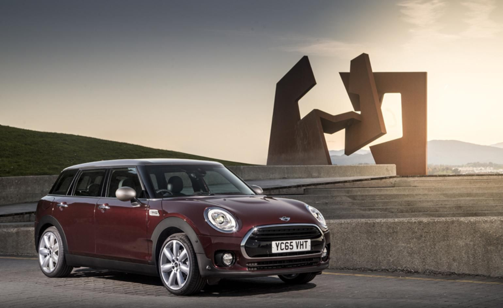

MINI
Motor2.0 l TwinPower Turbo Putere192 CP 0-100 km/h7.5 s Consum6.8 L/100 km Lungime4.25 m Portbagaj360 L
MINI Clubman
MINI Clubman aduce eleganță estate și practicitate într-un pachet modern.
Caracteristici cheie
Acces spate facil și design neobișnuit.
Materiale premium și ergonomie bună.
Setări pentru condus în oraș și autostradă.
Șasiu digital și funcții online.